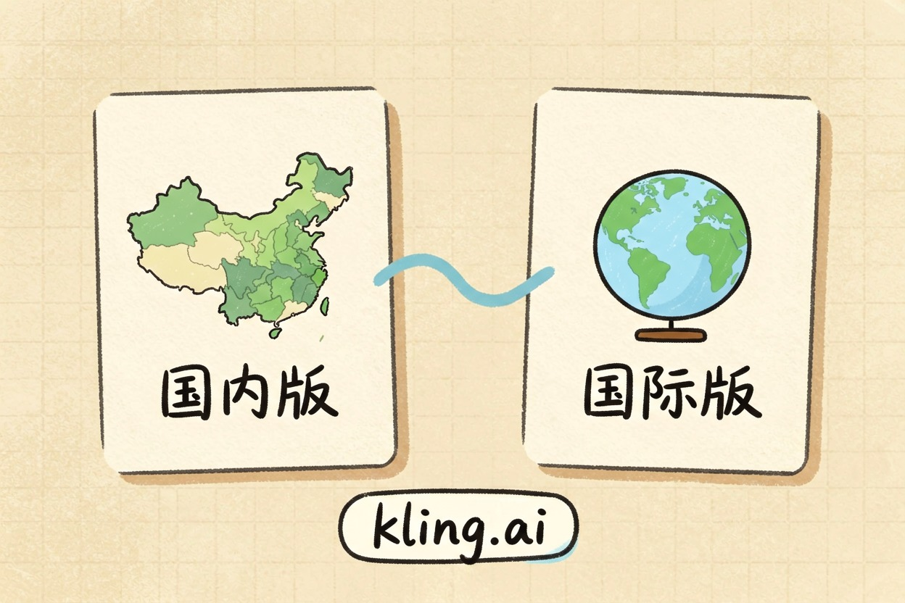
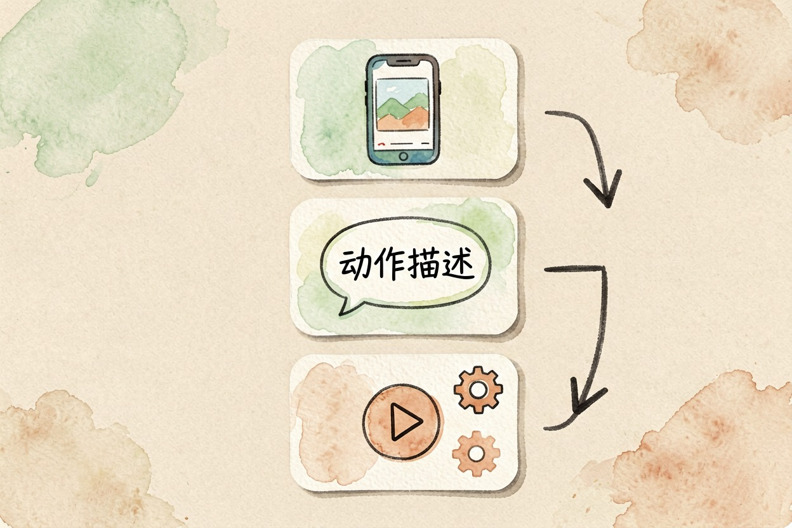
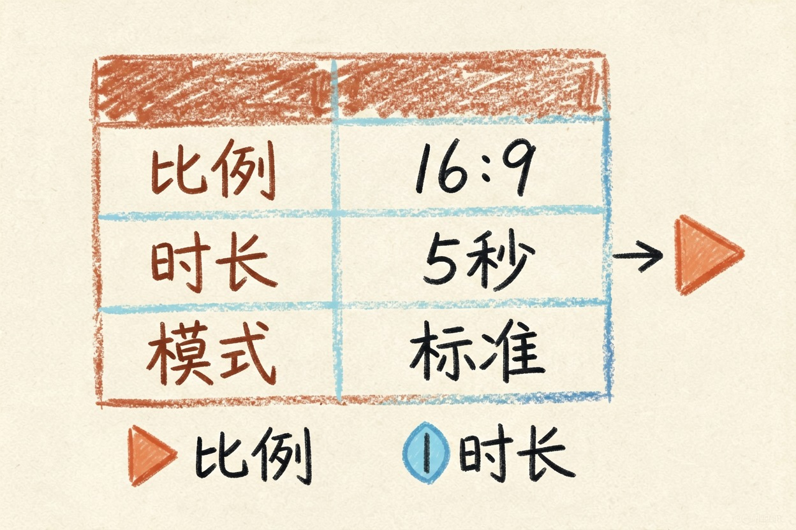
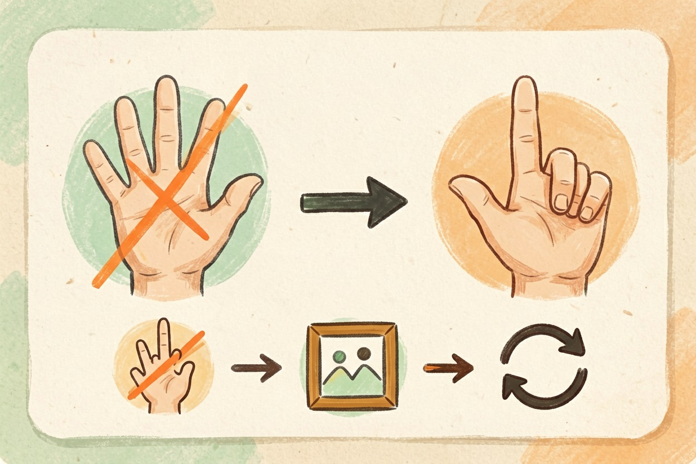
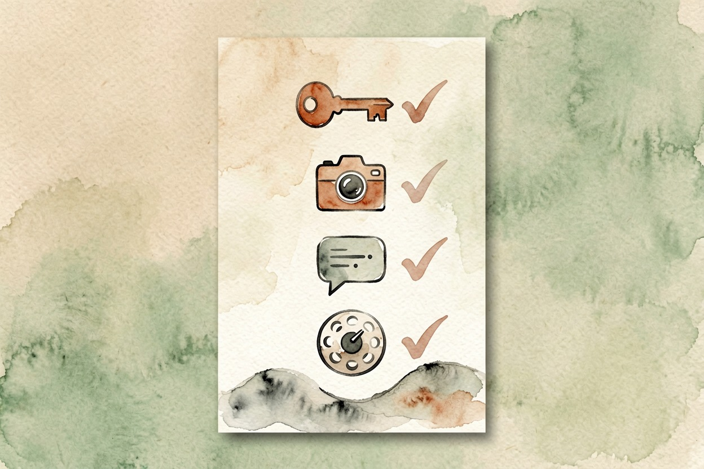

可灵 AI 怎么用？从图到视频完整流程
小林的第一个 AI 视频，手指长了六根。她没急着删，把截图贴回去让它自己改，第二版就正常了。
可灵ai怎么用：先分清国内版与国际版入口

可灵 AI 怎么用，第一步不是注册，是先找到对的入口。可灵有国内版和国际版两套体系，功能和定价不完全一样。
- 国际版官方入口是 可灵 AI 官网，创作后台在 app.klingai.com。
- 国内版通过快手生态或国内合作入口进入，入口和额度以当期官方页面为准。
- 警惕仿冒镜像站。搜「可灵」会看到很多带广告的假站，认准域名里的 kling 字样，别点第三方转链。
第一步 先做图生视频

新手先图生视频、后文生视频。原因是图已经把主体定死了，AI 只需补动作，翻车率低很多。操作步骤：
- 准备一张主体清晰、背景简单的图，建议你自己拍或自己画的。
- 在创作页选择图生视频，上传图片。
- 写一段只描述动作的提示词，不描述画面本身。
- 选时长和比例，点生成，等十几秒到几分钟。
动作提示词模板：
图里的人正在轻轻转头，目光从镜头右侧移向左侧，
嘴角微微上扬，背景保持静止，镜头缓慢推进，不要剧烈晃动。第二步 再说文生视频
文生视频要同时描述主体、动作、镜头和风格，一句话说不清就拆成四句。
主体：一位穿红色外套的年轻女性，站在雨后的街道上。
动作：她弯腰捡起地上的伞，抬头看向镜头。
镜头：中景，缓慢推近。
风格：写实电影感，冷色调。四个要素里，动作最容易崩，一次只写一个连贯动作，别让它同时转身又挥手又说话。
提示词里的动作越少越容易出片。如果上传的图本身带水印或文字，先把这些元素处理掉，否则模型会把水印当画面内容一起动起来。
参数怎么选：比例、时长、模式速查表

| 参数 | 新手推荐 | 说明 |
|---|---|---|
| 画面比例 | 16:9 或 9:16 | 按发布平台选 |
| 时长 | 5 秒先试 | 越长越容易崩 |
| 模式 | 标准模式 | 先别碰高级参数 |
| 运镜 | 无或缓慢 | 运动越多越容易出问题 |
想比较不同工具，看可灵和即梦的视频生成对比；想用剪映收尾剪辑，看剪映 AI 的智能成片步骤。
生成质量差怎么调，发布前别忘合规

手指崩、脸崩、动作跳变，是常见翻车点。排查顺序固定。先简化提示词，删掉多余动作。再换一张主体更清晰的图。最后把生成结果截图连提示词一起贴回去，让模型自己改。
还有一个容易忽略的点。同一段提示词多跑两次，结果也会不一样。满意的一条留下。其余删掉重来。
免费额度能生成几条，各时期不同，具体以官网当期说明为准。
发布合规有一件容易漏的事：按《人工智能生成合成内容标识办法》，AI 生成内容需要相应标识。你可以去国家网信办原文确认要求，别等发布了再补。横向对比更多工具，看AI 视频生成工具横向对比；即梦是另一个常见选择，看即梦 AI 的出图与视频能力。
可灵 AI 怎么用，一句话总结：一张好图加一段短动作提示词，先跑通图生视频，再慢慢加镜头和风格。所有工具入口汇总在AI 工具导航。

本文信息核对于 2026-08-06。AI 产品的价格、免费额度与功能变动频繁，实际以各工具官网当前说明为准。